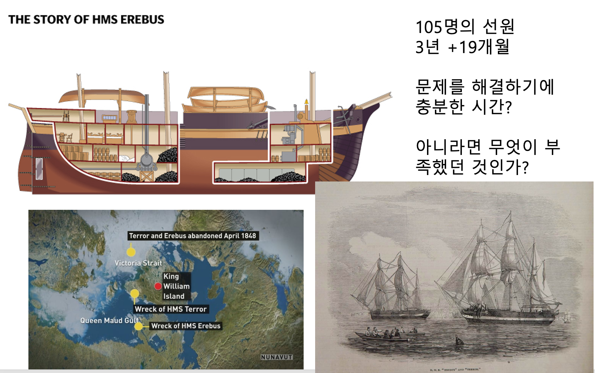
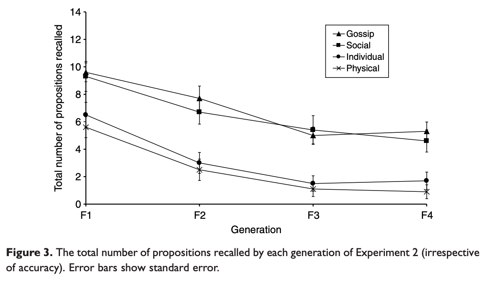
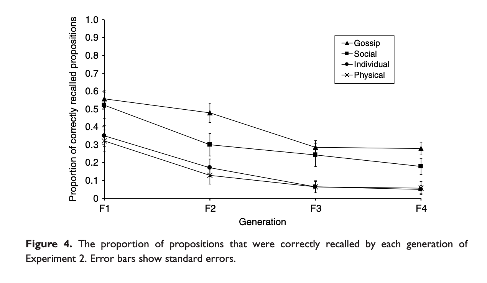
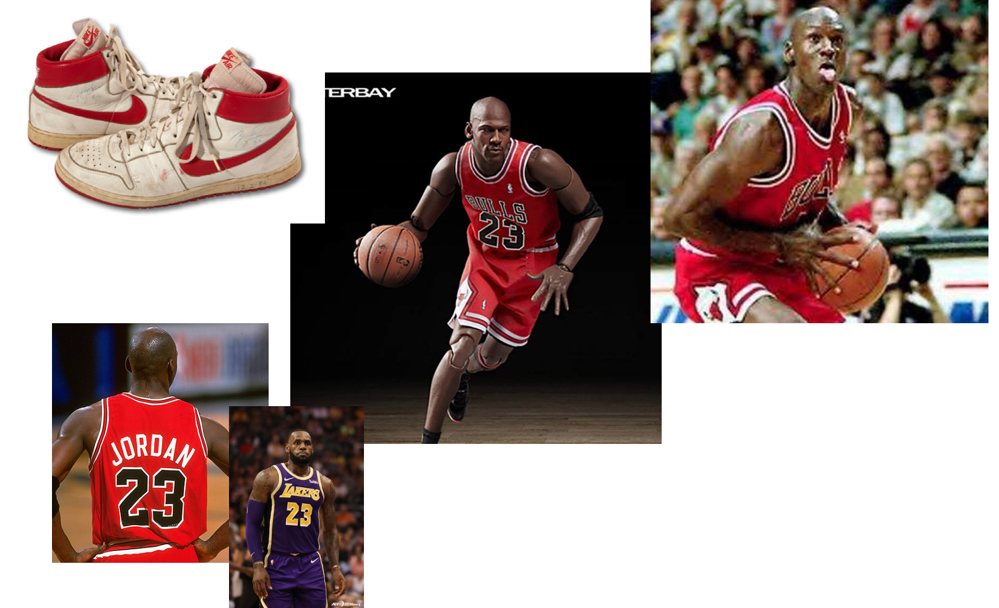

L7. 서비스의 맥락성
서비스의 맥락성을 이루는 요소로서의 문화
Minseop Lee(Programs in Cognitive Science, SNU)
2022-11-1(Tue)
강의 목표
- 서비스의 맥락성을 이루는 요인들을 이해한다.
- 그 중 인간과 서비스의 진화에서 문화의 힘의 영향에 대해 이해한다.
지난 강의 내용
- 생애사 이론과 근본동기 이론
- 근본동기를 활용하는 서비스 기획 사례들
서비스의 맥락성을 구성하는 요소
- 부산물
- 문화학습에서 사용자 편향
- 다른 서비스와의 관계
서비스의 부산물
- 부산물에 대한 정의
- 원래 풀고자 했던 문제는 아니나 본 문제를 해결하는 과정 혹은 결과 발생한 것들
- 부산물이 도움이 되지 않을 수도 있고 도움이 될 수도 있음.
- 배보다 배꼽이 더 클 수 있음.
서비스의 부산물
- 부산물은 해결해야하는 ’문제’일 수도 있지만
- 잘 활용하면 폭발적인 힘을 가지게 될 수도 있음.
서비스에 영향을 주는 사용자 편향
- 문화의 확산은 바로 사회적 전달을 통해서 이뤄진다.
- 그러나 이 사회적 전달은 투명하게 일어나지 않는다.
- 다른 사회적 원천으로부터 전달되는 문화적 정보는 사회적 전달 과정에서 각종 편향에 의해 왜곡되고 굴절된다.
문화적 전달의 힘
HMS Erebus and Terror(1845)
문화적 전달의 힘
Sir John Ross의 탐사
- 에레버스와 테러호보다 15년 먼저 킹윌리엄섬에서 살아남은 탐사대
- 22명으로 훨씬 적은 수
- 현지인인 이누이트족과 친구가 되어 거래관계를 맺었음.
- 방한법, 사냥법, 이동법 등을 배움
- 4년 동안 생존한 뒤 22명 중 19명을 데리고 영국으로 돌아감.
두 사례의 차이점
- 15년 앞선 탐사대가 유전적으로 더 우월하다는 설명은 합리적이지 않음
- 현대의 인간이 살아가는데에는 주요 기관(organ)들 외에도 문화적 요소가 반드시 필요하다.
- 기술의 편리함에 ’의존’하게 되는 문화적 인간
인간의 문화적 학습을 위한 유기체적 특성
- 몸 밖에서 소화시키기 : 조리, 화식
- 신체적 힘을 도구로 대체함으로써 힘 대신 도구를 만드는 정교함이 나타남.
- 빠른 속도를 포기하고 인내하는 달리기 능력을 갖추게 됨
카카오 사태

국가간 마찰에 의해서도 발생
- 일본과의 갈등으로 인해 발생한 무역분쟁
- 산업의 기간이 되는 소재, 부품, 장비 분야에 대한 백색국가 지정 해제
- 소재, 부품, 장비에 대한 국산화 노력
유기체와 문화의 관계
- 앞선 강의에서 ’낙농업’과 ’젖당분해효소’의 공진화 관계에 대해서 설명
- 서로 영향을 주는 ’정적 되먹임 고리(Positive feedback)’가 형성
문화적 인간이 진화할 수 있었던 이유
- 초기 형태의 사회적 학습(즉, 따라하기)이 가능하면서 문화의 자본들이 무리안에 쌓이게 됨
- 이러한 환경에서는 문화적 요소들을 잘 습득하는 개체가 유리하다.
- 사냥과 같은 생태적 필요성에 의한 행동들 외에도 노래(언어), 춤(몸의 동작) 등의 집단을 이루는데 필요한 문화적 요소에 대해 탁월한 개체들이 매력적인 상대로서 생존과 번식에 유리하게 되고,
- 이에 따라 문화적 요소들도 함께 융성하게 되면서 정적 되먹임 고리 형성
- 그러나 이러한 정적 되먹임 고리로 유기체와 문화의 진화에 대해 모두 설명할 수 있을까?
흔한 정적 되먹임 고리 사례
- 알베도(Albedo)와 극지의 빙하 면적의 관계
- 출산과정에서 옥시토신 분비
- 정적 되먹임 고리의 과정은 언젠가 끝이 나는 과정
- 빙하 면적이 다 녹거나, 출산이 이루어질때
되먹임 고리의 종결
- 문화의 발전은 계속해서 일어나는데 그에 대응하는 인간의 유기체적인 진화가 일어나고 있는가?
- 문화의 발전의 속도와 유기체 진화의 속도의 차이가 발생
- 문화가 인간의 유기체적인 특성에 도움을 주는 쪽이 아닌 인간의 유기체적인 특성을 착취하는 구조가 발생
- 문화가 인간의 유기체적인 특성에 의존하지 않고도 발전할 수 있게 되면 더욱 가속화 될 것.
Nosedive
영상링크 : [Link]
중국의 사회신용제도

중국의 사회신용제도

The game of life
- 신용정보, 지불이행능력, 인적사항, 행동과 구매 패턴, 대인관계 등 에 대한 자료를 바탕으로 개인에 대해 판단
돈으로 살 수 없는 것들 = 수치화 할 수 없는 것들
- 플랫폼 의존성↑,
- 수치화 할 수 있는 것들↑
- 수치화된 정보를 통한 평판의 형성
- 한번도 만나보지 않은 지구 반대편에 살고 있는 에어비엔비 호스트의 평점을 알수 있고 그것을 통해 그사람을 평가할 수 있음.
- 하지만 인간의 얼굴을 통해 다가온다. ex. 당근마켓의 ‘매너온도’
- 다음 단계는 무엇일까?

배달의 민족은 배달하지 않는다.

문화적 전달 = 문화를 지탱하는 미시적 과정
- 현재 상태의 거대한 문화 현상도 엄청나게 많은 문화적 정보의 전달과정을 거치면서 변형되고 축적되었음.
- 문화적 정보의 전달에 영향을 주는 요인(편향)들
문화적 정보가 전달되는 과정
- 정보를 전달받을 사람은 정보의 원천을 고를 수 있음(choose to recieve)
- 전달할 정보를 부호화하고 인출(encode and retrieve)
- 정보를 전달할 사람음 정보를 받을 사람을 고를 수 있음(choose to transmit)
참고자료 : Link
편향의 종류
- 편향된 전달
- 내용 편향
- 맥락 편향
- 명성 편향
- 순응 편향(빈도 편향)
편향된 전달
- 리처슨 & 보이드 <유전자만이 아니다>
- 유전자-문화 공진화이론
내용 편향
개인은 콘텐츠를 기반으로 일부 문화적 변형을 배우거나 기억할 가능성이 더 크다. 콘텐츠 기반 편향은 대안적 변이와 관련된 비용 및 이점의 계산 또는 인지 구조가 일부 변이를 더 쉽게 배우거나 기억할 수 있도록 하기 때문에 발생할 수 있다.
- 전달되는 문화 콘텐츠가 얼마나 매력적인가?
- 기억하기 쉬운가?
- 전달하고 싶게 만드는가?
내용 편향 검증
내용 편향 검증


참고자료 : Link
내용 편향만이 아니다
- 문화적 정보가 전달될 때, 콘텐츠의 내용 외에도 콘텐츠가 전달되는 사회적 맥락이 더 중요하게 작용할 수도 있음.
참고자료 : Link
명성 편향
특성을 나타내는 개인의 관찰 가능한 특성을 기반으로 한 특성의 선택. 그럴듯한 모델 기반 편향에는 성공하거나 권위 있는 개인을 모방하는 성향과 자신과 유사한 개인을 모방하는 성향이 포함된다.
명성 편향
무엇이 마이클 조던의 성공에 영향을 미쳤을까?
- 여러 요소들이 있을 수 있음
- 분석하는것은 어려움.
- 따라하는 것은 쉬움.
- 조던의 모든 부분을 따라하게 됨
명성과 권력은 다르다.
- 명성은 자발적으로 존중을 이끌어내고 따라하고 싶게 만듦으로써 명망가의 아이들은 사망률이 낮고 더 젊어서 결혼할 확률이 높다.
- 권력가는 그렇지 않다.
- 좋은 이미지를 가진 사람을 광고로 쓰는 이유
베르테르 효과
- 유명인의 자살을 따라하게 되는 현상
- 유명인의 자살에 대한 언론 보도 준칙
순응 편향
선택의 근거로 문화적 변이의 보편성 또는 희소성을 사용하는 것. 예를 들어, 가장 유리한 변형이 가장 일반적일 가능성이 높다. 그렇다면 적합성 편향은 올바른 변형을 쉽게 얻을 수 있는 방법이다
- 자기 자신의 판단에 의하기보다는 주위에 있는 사람들과 같은 행동을 하는 경향
순응 편향 사례

순응 편향 사례
- 외국의 한 도시
- 붐비는 거리에서 식당 열곳 중 한곳을 선택하려고 한다.
- 한 곳에는 손님이 40명, 여섯곳에는 10명씩, 세곳에는 아무도 없음.
- 어디를 선택할 것인가?
- 온라인 환경에서 각종 리뷰에 목숨을 거는 이유는 그만큼 순응편향이 강하다는 것을 보여주는 사례
다음 시간에는…
- 다른 서비스들과의 관계에 대해 알아보고,
- 사례중심으로 전체 내용을 리뷰할 예정
UX와 서비스 기획